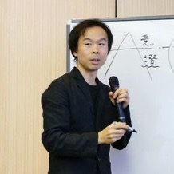

Profile
Motohiko Sato / Wonder Sato
MBBS 代表 | AI共創イノベーション 主宰 | 執筆業
手技療法家 | 応用精神分析士 | コーチ | プロンプトエンジニア
10代の頃から心身に関するあらゆる技法を実践・研究。その経験を活かし、医療系の研究所に勤務し、医療機関と連携してメンタルヘルス・特定保健検診・腰痛対策等を一部上場企業や官公庁で講演・臨床活動を行う。
退職後、心理学者・今井集士博士の心理学研究所に勤務し、研究員として活動。県が支援する医療系の研究会にて身体活動部門の部長を務め、辞任後に心身バランス研究会（MBBS）を立ち上げ、心身の研究を事業とする。
YouTubeチャンネル『AI共創イノベーション』を主宰。これまでの研究をAIで統合することをビジョンに掲げる。
タイ国文部省認定校 CLS Massage School 本校に招聘され、名古屋地区の代表を担当。
心理学者・今井集士博士の研究所にて研究員として勤務。
空対理論 二代伝人（今井集士認定による唯一の継承者）。
『月刊 手技療法』に連載（2015年12月号〜2017年12月）。
医師・大学教授と協同し、論文「気功におけるイメージの効果」を学会にて発表。参加者投票にて優秀賞を受賞。
宇宙の真理、人間存在の意味を求道者として探求・追究・解明することをライフワークとする。
生成AIの使い方や業務の自動化・効率化について個人・企業に指導。プロンプトエンジニアとしても活動し、業務自動効率化のための GPTs『AI共創イノベーター』を開発・提供。
AIと人間が共に創造する「AI共創イノベーション」を提唱。AI共創イノベーションスクールを主宰し、文系・アナログ思考の方へのAI活用指導に取り組む。